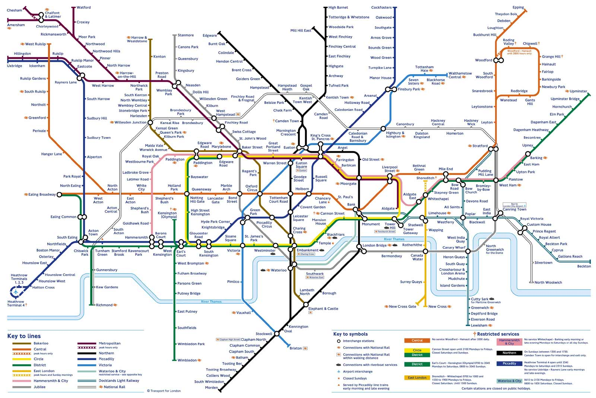

Network Maps and Survey Maps
Here's a network map of the London Underground. The area
around the centre (oops, I mean center) of the city is greatly
enlarged relative to actual geographic distances. For example, on the
map, the distance between Paddington and King's Cross (near the
center) is larger than the distance between Heathrow airport and Acton
Town (lower left corner). In reality, the distance from Heathrow to
Acton Town is much greater.
